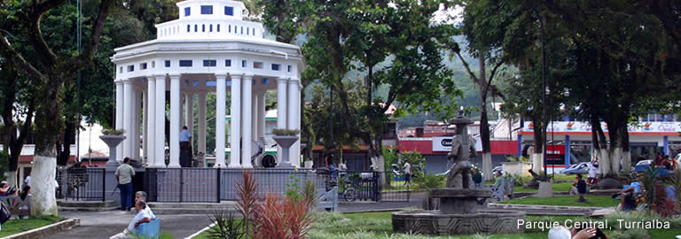
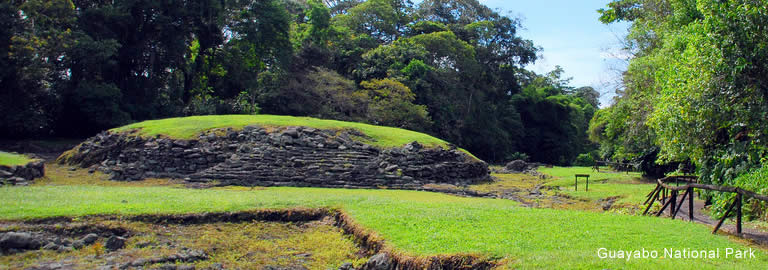

Super Computing and Distributed Computing Camp
Universidad de Costa Rica, Sede del Atlántico en Turrialba
July 10-16, 2011


About Costa Rica
Local Information
Costa Rica is a small, tropical country, situated in the Central American isthmus. It is neighbored to the Northwest by Nicaragua and to the Southeast by Panama, and has coastlines on the Pacific to the West and on the Caribbean sea to the East. It is located approximately between 8 and 11 degrees North latitude and 82 degrees West longitude.
View SC-Camp 2011 in a larger map
Languages
The official language is Spanish. A relatively large part of the population speaks English, due to the magnitude of the country's foreign commercial and cultural exchange. Also, in some regions of the country, native languages are spoken: Cabecar, Bribri, Maleku (also known as Guatuso), Ngöbe (aka Guaymí), Térraba, Boruca, and Limon Creole English.
Population
The population, of approximately 4.5 million inhabitants, is mostly mestizo, however there is a large ethnic and cultural diversity, due to a long series of immigrations from different parts of the world, and large demographic movements in the region due to social and political turmoil during the last decades.
Political and geographical
division
The country is divided geographically in seven provinces: San José (its header city San José is the country's Capital), Alajuela (header city Alajuela), Cartago (Cartago), Heredia (Heredia), Puntarenas (Puntarenas), Guanacaste (Liberia) and Limón (Limón). The city of Turrialba is located within the province of Cartago.
Political system and social
situation
Since the mid 1950s, when the National Army was abolished and social investment was considerably raised on education and public health, Costa Rica is ruled by a republican, pluripartisan political system. Its social welfare situation still inherits some of the benefits of the universal social security system developed during the 1960s and 1970s, which offers the population a basic structure for education, public health and communication in most cities and towns in the country. However, that condition has been heavily degraded during the last three decades of financial crisis along with State policies focused on public spending reduction and the country's opening to global markets.
Education
The literacy rate in Costa Rica is higher than 95% and basic education is mandatory; also, State-funded higher education has been reached by almost 20% of the population.
Economy and Society
Costa Rica has developed during the last three decades a strong strategy for economic growth based on technical education, English as a second language, and the formation of entrepreneural initiatives to attract foreign investment in markets such as high technologies. This, however, at a cost on social investment. This context makes it more relevant in the long term than before to invest in scientific research and technology development as a way to develop own, innovative means to approach problems of a national or regional scale related to public health, education, social security, disaster prevention and management, environment, biodiversity and others.
Geography and Climate
Costa Rica, with an extension of 51.100 square kilometers, has a large weather diversity caused by the influence of dominant wind currents coming mostly from the North, the Caribbean Sea and the Pacific Ocean. From the dry tropical flatlands in Guanacaste, on the Northwest side of the country, to the tropical rainforest on the Caribbean coast, passing over the humid weather of the highlands, a large number of different microclimate areas can be identified. The highest mountain peak, Cerro Chirripó, rises 3.820 meters over the sea level. Eleven volcanos form an almost straight line from Northwest in direction Southeast. Several of them are currently active: Tenorio, Arenal, Poás, Irazú and Turrialba. In dormant state are Orosi, Rincón de la Vieja, Miravalles, Platanar, Hula, and Barva.
About Turrialba
The city of Turrialba, situated only at 646 meters over the sea level in the Huetar region, was developed along the old passway from the Highlands to Port Limón on the Caribbean Sea. It is located in the province of Cartago, right at the foot of the Central Mountain Range (Cordillera Central), where the flatlands start their lead to the East coast. Economy in Turrialba is based on commerce, sugar cane grow, coffee, macadamia and dairy products. The county (cantón) of Turrialba has approcimately 800,000 inhabitants and has an extention of 1,664.57 km2.
Getting to Costa Rica and Turrialba
You can reach Costa Rica by land or air. Coming by land, the Interamerican Road crosses the country from the Nicaraguan border, in the small town of Peñas Blancas, to the Panameniam border, on the city of Paso Canoas. It takes somewhere between 12 and 15 hours to cross the country along this road.
To arrive by air, you should plan to land in Juan Santamaría International Airport (airport code: SJO), located in the city of Alajuela, approximately 20 kilometers from San José.
Moreover, SC-CAMP 2011's Local Committee has
organized the transportation for instructors and participants to and
from the event's site as explained further below.
Upon your arrival in Costa Rica
We suggest that you contact the Local Committee by email if you have any questions or any special needs once you arrive in Costa Rica.
Upon your arrival at the Juan Santamaría airport, after passing through Immigration and Customs, you will need to seek for the counter of Taxis Unidos (http://www.taxiaeropuerto.com/), the only taxi company authorized and recommended by the airport authorities. Walk to Taxis Unidos counter and ask to be taken to the “Ciudad de la Investigación” of the University of Costa Rica, in San Pedro de Montes de Oca. Just say “A la ciudad de la investigación de la universidad de Costa Rica en San Pedro, por favor”. You will be able to pay the bill in US currency. The fare will depend on traffic, but should be somewhere between US$30 and 35.
Transportation to and from Turrialba
Transportation for instructors and students will be provided from University of Costa Rica's central campus in San José to the Atlantic Campus in Turrialba on Sunday, July 10 in the morning. A precise timetable will be provided later. Also, on Saturday, July 16 in the afternoon, transportation will be provided back to San José.
Local transportation between cities in Costa Rica can be done by bus or car only. If by any reasons you are not able to reach UCR's San José campus on Sunday, July 10, you will need to take a bus to Turrialba. For this, take a taxi and ask the driver to take you to “Parada de Turrialba, por la Corte” (which stands for “Turrialba bus stop, near the Courthouse”). Take the bus at the station, preferably a direct one (you can ask the ticket seller at the counter) as it will take shorter to get to Turrialba. Once you get to Turrialba, you will need to take a taxi to the University campus. Just ask the driver to take you to “Campus de la Universidad de Costa Rica”.
The bus line to Turrialba operates every day from San José from 5 am to 9pm, and from Turrialba from 5am to 10pm. The trip is 65 kilometers long and takes about 1:30 hours.
Safety tip: Using taxis
Please note that for safety reasons, if you need to take a taxi, we ask you to use only red-colored cabs identified on their doors with a yellow triangle and the cab's license plate number in it, and the driver's photo identification within the cabin. You should also make sure that the taxi driver uses the taximeter to charge for the service.
Immigration requirements
The following information is provided as is and was taken from the Costa Rican Government's Immigration Office's website. Please consult the Costa Rican consulate in your country of citizenship to make sure to have the latest, official information.
The rules are the following:
- No entry visa is required for Canada, the United States, and any European country or Great Britain.
- Citizens of the following Latin American countries are required an entry visa: Colombia, Ecuador, Nicaragua, Perú, Dominican Republic.
- If you belong to the second group, but you have an entry visa stamped on your passport and still valid for at least three months for the United States, Canada, South Corea, Japan, the European Union countries, or a Shengen visa, you will not be required a Costa Rican entry visa.
The stay in Turrialba
Acommodation and meals
Students will be acommodated in camping tents in the open fields around the sports area of UCR's Turrialba campus, right in front of the barrack huts, where instructors will be lodged.
Close to the camping area there are shared bathrooms, toilettes and picnic areas.
Campus facilities
Three computing labs, several classrooms and an auditorium will be at the event's disposal during the week.
Outside of the camp schedule, all participants will be allowed to use the campus' sports facilities: soccer field, basketball and volleyball courts, swimming pool, running tracks, etc.
What to expect of Turrialba's weather
Costa Rica's yearly average temperature in the rainy (or “winter”) season, that is, April through November, reaches 22,9 degrees Celsius and the yearly average relative humidity reaches 72%. Turrialba's average temperature and relative humidity are higher than the national average.
During the months of June and July there is usually a reduction in rain precipitation that is typical of the Costa Rican winter (invierno).
Turrialba is particularly warm and humid, therefore you should expect temperatures somewhere in the 25-32 degrees Celsius range, and high relative humidity, probably around 80 to 85%.
We suggest that you bring with you a rain poncho and/or a travel umbrella, and hicking (preferably impermeable) boots.
Important information
Currency
The national currency is the Colón (₡). Current exchange rates are approximately ₡700 per € and ₡500 per US$.
Important: Currency can only be exchanged in official exchange offices or banks. You will always be asked to present your ID (passport) when requesting currency exchange. Don't accept street offers for currency exchange, as you may get fake bills.
Safety advice: don't loose your passport
It is allowed for foreigners in Costa Rica to travel around the country with a photocopy of their passport (picture id page and entry stamp page), so that the original can be kept in a safe place during the stay. The Local Committee will ask you to hand your passport upon registration at the camp's venue, so that we can make the copy for you and a copy for our records.
Entertainment, tours
During the week there will be a half day reserved for a group tour. The Local Committee is planning a tour of the Guayabo Archaeological Site. It is the only preserved urban site of precolombian societies in the country, although there is evidence of other sites that have not been searched and digged.
Other places to visit around Turrialba are:
- Reventazon River – Waterrafting
- Turrialba Volcano
- Aquiares Waterfalls
- Guayabo National Monument – Archaeological site
- CATIE – Tropical Agronomical Center for Research and Education
If you want to stay longer
If you would like to stay for a few days to visit Costa Rica before or after the camp, here is a list of suggestions. Please feel free to contact us with your questions, we will be glad to help you plan your trip.
Beaches and towns on the Caribbean coast:
- Turtle spawning, a paradise for sea biodiversity, turtle desovation
- Cahuita, a laid-back town with black-sand beaches and surrounded by a National Park
- Puerto Viejo, the prettiest Caribbean town along the coast
- Manzanillo, the farthest town close to the Panamenian border
- Sixaola, border city to Panama
Beaches and towns on the Pacific coast:
- Nosara and Sámara, on the Nicoya peninsula
- Malpaís and Santa Teresa, on the Nicoya peninsula
- Puntarenas, main port ont the Pacific
- Manuel Antonio, a biological reserve and National Park
- Dominical, on the Southern Pacific coast
- Osa, a peninsula, the most biologically rich and diverse region in the country
River rafting near Turrialba (according to many, one of the world's finest!)
- Reventazón
- Pacuare
Volcanos:
- Arenal: On the mid-Northwest region, currently erupting, large touristic infrastructure around
- Irazú: On the Northern side of the road from San José to Turrialba, beautiful crater landscape
- Poás: In the province of Alajuela, about 50 kilometers from the Airport
- Turrialba: Right in front of the city, currently erupting, beautiful view from the city
Some statistics
| Category | Subcategory | Statistic | 1990 | 2009 |
| General: | Extension | 51,100 km² | ||
| Population | 3.5 Millions | 4.5 | ||
| Social: | Demography | Population density | 59.8 per km² | 88 |
| Child mortality rate | 14.78 children < 1 year old per 1000 born alive | 8.8 | ||
| Life expectancy at birth | 76.87 years | 79.1 | ||
| Work | Workforce | 1.7 inhabitants (57% ot total) | 2.1 (47%) | |
| Open unemployment rate | 4.6% | 7.8% | ||
| Poverty | Poverty percentage | 27% | 18% | |
| Income | Gini's coefficient | 0.374 | 0.437 | |
| Education | Level of instruction | 10.4% of total, with higher education | ||
| Economy: | Production | Gross national product per capita | US$ 2,296.2 Millions | US$ 6,494.1 |
| Foreign trade | Exports | US$ 1,899.3 Millions | US$ 8,788.4 | |
| Tourism | Foreign currency entry | US$ 330.6 Millions | US$ 1989.7 | |
| Visitors | 505 Thousands | 1,495 | ||
| Environment: | Land and forest | Protected wild areas | 990,37 Hectars | 1,340,782 |